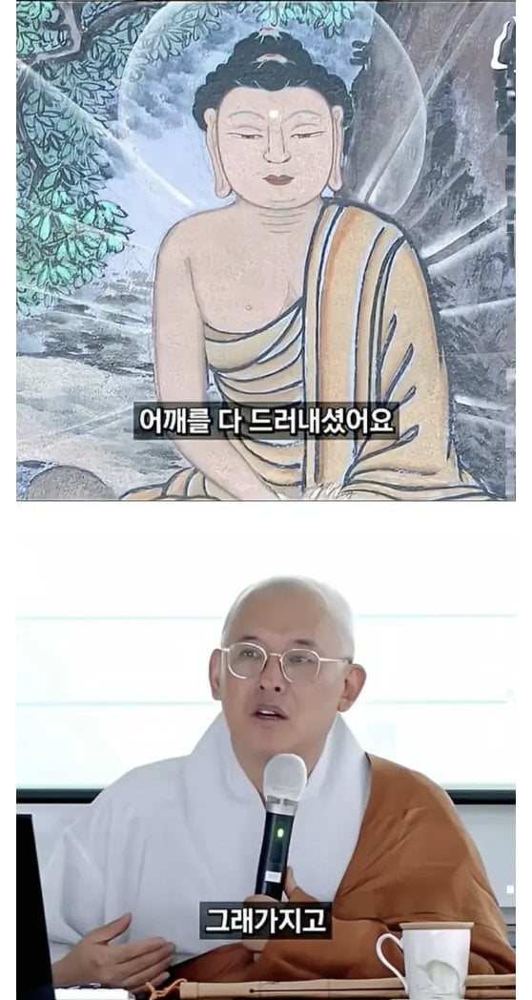
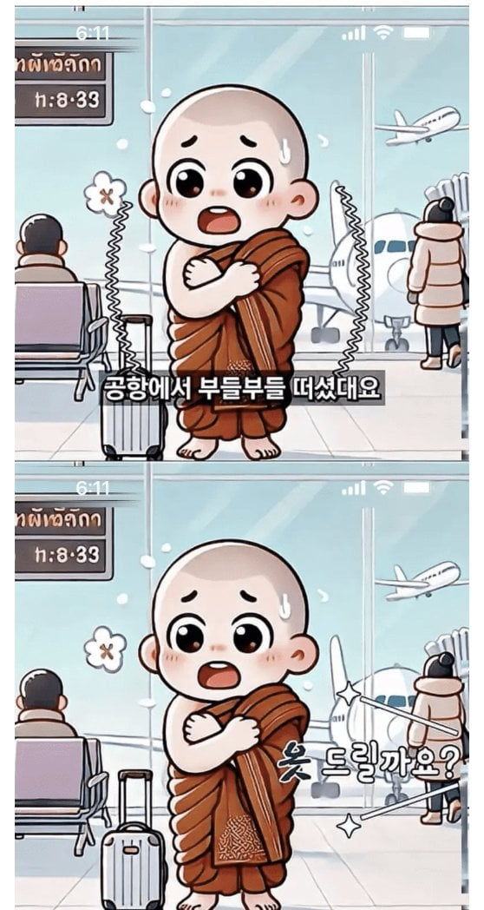
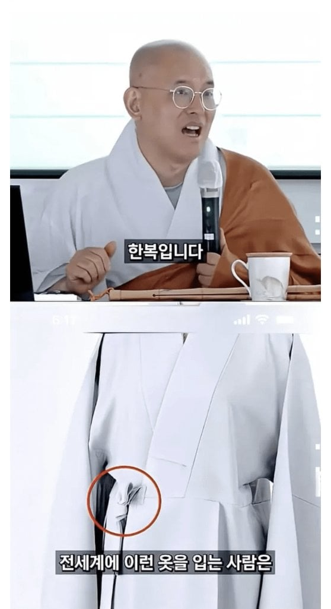

ㄴㄴ 구스들이 날아와서 명상에 잠긴 붓다를 감싸주었다는 일화가 추가될 것
뭐 구스들이 깃털을 뽑아서 장삼에 꼽아준게 구스다운 시작이라고?
불상에 코브라가 아니라
학이나 오리들이 추가되겠군
불잘알 ㄷㄷ
fire egg well
ㅋㅋㅋㅋㅋㅋㅋㅋㅋㅋㅋㅋㅋㅋㅋㅋㅋㅋㅋㅋ
구스하네
ㅋㅋㅋㅋㅋㅋㅋ
러시아 사람도 한국와서 춥다그러는데 어깨 까고 어케 버틸라고 ㅋㅋㅋ
부처처럼 입는다고 부처가 되냐
정작 석가모니도 왜 이 시대에 자기처럼 입냐고 어이없어 할 것 같은데
선글라스쓰고 하와이언셔츠에 수영복겸용 반바지입고 쪼리신고 오셔서 왜그러고다니냐고 하실듯
끼여엉
부처께서 형식에 얽메이라고 하지 않으셨는데
한놈이 손들고 어디까지가 형식인대요? 하면서 모든 문제가 시작됨...
부처님은 추운데 패딩 안 입으면 답이 있는데 사서 고생하는 미련한 중생이라 할 분임. 욕심을 버리고 마음을 비우라는 건 그런 집착이 죄를 짓게 되고 고통이 되는 경우에 버리라는 거지.
대충 말하면 남의 패딩 죽여서 빼앗고 이미 패딩 입고 있는데 4겹으로 쳐 입고 낑낑 거리고 이런 병신 짓을 하지 말라는 거지. 추운데 입을 수 있는 패딩 찾아 입는 건 집착이나 욕심이 아니라 현명한 거임.
부처님도 한국분이셨으면 롱패딩입으셨어
아아도 드심
또 깝치지 ㅋㅋ 다 이유가있는거야
부처에 집착하는것음 부처를 모르는것이다
남방 상좌부쪽이 자신들이 원류다 라는 부심들이 좀 있음. 중간에 계맥이 끊겼다고. 부처님 생전에도 있었던 여성 출가자도 인정 안했었고. 조계종측에서 `그래? 그럼 우리는 끊긴적 없으니까. 한국쪽에서 비구니 수계해주면 되지?` 라고 해서 받아갔는데. 그래도 인정 안하는 경우도 있고.
대승 쪽에서 보면 좀 어이없는 경우가 있음. 애초에 승단의 인적 구성도 남방쪽이 대승쪽보다 우월할리가 없는데, 악습에 젖어있기도하고..
https://www.thebulgyo.com/news/articleView.html?idxno=402
(남방은) "비구니 계맥이 끊어졌다고 보아 공식 구족계를 인정하지 않는다. 태국의 '매지(Mae Chi)', 미얀마의 '띨라신(Thilashin)' 등 8~10계를 지키는 여성 수행자가 존재하지만 정식 비구니 지위를 얻지 못해 교단 내 복지 및 참정권 제한을 겪고 있다."
자신의 것인 적도 없던 거짓된 명성에 집착하고 있는 가짜 수행자인 것임. 부처는 너의 깨달음을 위해 나의 가르침도 부수고 나아가라고 가르침. 걔네는 집착하느라 깨달음에서 멀어진 가짜임.
부처님의 마음을 따라야지 옷가지 따라한다고 마음까지 따라해지냐
마음에서 형식이 나올까?
형식에서 마음이 나올까?
일본 승려는 불교가 아님?
일본 승려들도 한국처럼 입긴하던데 근데 색깔이 검은색
일본 스님들은 결혼도하고 술도먹고하던데
거기는 로컬라이징이 된것도 있고 종단이 한국에 비해 다양해서..
한국도 종파에 따라 술고기결혼까지 다양함 ㅋㅋ
부처가 가장 하지 않았을 법한 복장 허식을 따지고 앉았네
ㄹㅇ ㅄㅋㅋ
그러네 부처는 저걸 가르쳐주는게 아니네
꼴려서 안돼

포달랍궁것들
내공으로 이겨냈어야지
한서불침ㅋㅋㅋㅋㅋ
겨울 맛좀 봐라ㅋㅋ
내가 태국살다왔는데 지금 태국이랑 온도차이가 한낮기준 25도 차이남 여기10도 거기 35도이럼..
부처: ㅆㅂ 나 그러라 한적없어 새끼들아
석가모니가 한반도에서 태어났다면 구스다운 패딩 입었을것